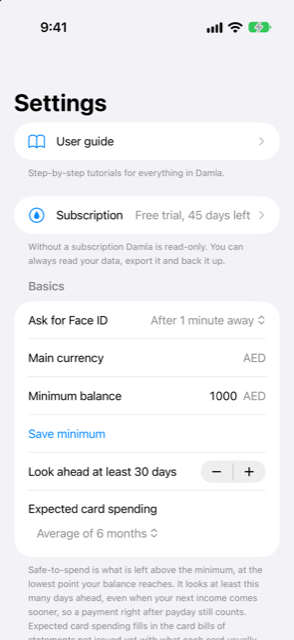

Guide › Settings, backup and privacy
Settings, page by page
Where everything is in Settings.
Settings holds the everyday controls: the lock, the minimum balance, reminders, market data, the automations and your backups. This page is a map, top to bottom.

When to use it
- You cannot remember which page a setting lives on.
- You want to know what a page does before opening it.
Step by step
- Open Today and tap the gear at the top right. That opens Settings.
- Tap a row to open that page; the back button returns.
The pages, top to bottom
From top to bottom, the list is the User guide, Subscription, a Basics section, then rows for the other pages.
User guide
Step-by-step tutorials for everything in Damla. The book icon on Today opens the same guide.
Subscription
The subscription lives on this page. See The free trial and the subscription.
Basics
| Setting | What it does |
|---|---|
| Ask for Face ID | Every time, or after 1, 5 or 15 minutes away. |
| Main currency | The currency everything is added up in. It cannot be changed here. |
| Minimum balance | The amount you want to keep untouched. Enter it and tap Save minimum. |
| Look ahead at least … days | How far the forecast looks even when your next income comes sooner. Anywhere from 0 to 90 days, in 5-day steps. |
| Expected card spending | Off, or the average of 3, 6 or 12 months; it fills in card bills for statements not issued yet. Once a statement is issued, its real amount takes over. |
Safe to spend is what remains above the minimum at your lowest point, so the minimum and the look-ahead both change it.
Reminders
- Notify me before things are due: a notification the day before and on the day for bills, income and card bills that are due and not recorded yet. You choose the hour, from 06:00 to 22:00.
- Warn me when my balance may dip below my minimum: one notification, worked out on this phone from your data.
If you have switched notifications off for Damla in the iPhone's Settings, a line here says so.
Currencies and prices
- Market data: turn on Update exchange rates daily and Look up prices for holdings, or tap Refresh now to fetch straight away. A manual refresh always tries the rates, and the prices only if that switch is on. After a refresh, a report shows what each source updated, skipped or failed. Rows show when each source was last updated.
- Card purchases in another currency: the bank's markup Damla estimates with (2.5% when left empty), and how to read short currency words such as "DH" and "DHS" in your messages — as your main currency, or as AED or MAD.
- Exchange rates: one row per currency you use, with the rate in force, whether it was fetched or yours, and its date. You can type your own.
- Tickers: one row per holding, to fetch its price.
Both look-ups are optional and the app works offline. Details: Prices and exchange rates.
Categories
Add categories, and rename or remove them. Details: Payees and categories.
Bank messages and statements
- Automations (Shortcuts): how your bank's texts, emails and Wallet payments reach Damla, and the steps for each automation.
- Recent alerts: what Damla did with the messages that reached it, and where to undo one. See What Damla ignores, and undoing an alert.
- Statement passwords: passwords Damla kept for locked statement PDFs, in this phone's Keychain. Forget … saved passwords removes them; with none saved, the section says No statement passwords saved. They never leave the phone and are not in backups.
Backup and your data
- Automatic backup: once a day, when you leave Damla, an encrypted copy goes to a folder you choose. The newest 7 are kept.
- Export transactions: a CSV of every transaction, for all years or one year you pick. Tap Make a CSV file, then Share to save or send it.
- Export an encrypted backup: an encrypted file with a passphrase of at least 8 characters. Keep the passphrase safe.
- Restore from a backup: choose the file, enter the passphrase. It replaces all data on this phone.
- Family: Make a snapshot for family creates a read-only picture of today's numbers, encrypted with a passphrase you tell the other person. They open it in Damla on their phone; it does not update.
- Delete all data erases everything on this phone. It cannot be undone: export a backup first if you might need it.
Set-up guide
Restarts the set-up guide, so you can finish anything you skipped the first time.
Good to know
Related
- Backup and restore
- Export and the family snapshot
- How automatic capture works
- The free trial and the subscription
Something unclear or missing? Write to support@raveniq.ai and say which page.